Is it ready to print? The print check
Some failed prints aren't the printer's fault. The part was floating a millimetre above the plate, or the STL had a hole in it. ScottiCAD 0.3.0 checks for these before you export. Here are examples of what it will look for.
 Scotti
Scotti
· 5 min read
Over the years, I've had a lot of successful prints, but also a few failed ones. Of course, some faults are in the printing process itself: a dirty build plate that the filament won't stick to, or waterlogged filament that turns brittle and snaps off inside the PTFE tube. But there's also a class of problem that isn't with the printer at all, but with the model. Those are the problems you can eliminate from the start. For example, more than once I've exported a model floating above the plate. It was just an accident, but it's a sure way to end up with a blob of doom. Others have been meshes with holes in them.
These are all things a computer can spot before you export, so ScottiCAD 0.3.0 does. It's called the print check, and this post walks through everything it looks for, with an example of each.
Where to find it
Click the spool button at the right end of the toolbar. That opens the filament panel: the estimate of how much filament the part will use, and under it, the print check. It checks what's selected, or the whole design if nothing is.

Each line of the check is one of three things:
- a tick: the parts are ready to print;
- a warning triangle: something that will probably spoil the print, so fix it before you export;
- an ⓘ: something worth knowing that needs nothing done.
Click a line to select the part it's about, and hold the pointer over it to see what to do. You don't have to remember to look, either. If there's a warning when you export, the Export dialog tells you, and Show takes you straight to it.
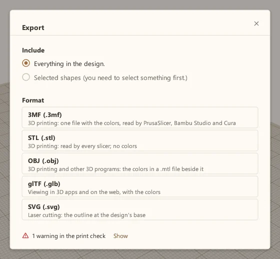
Is it sitting on the plate?
One of the commonest mistakes, and the easiest to miss. A part that's moved up a little, even a fraction of a millimetre, looks fine on screen. The check measures how far its lowest point is from the plate.
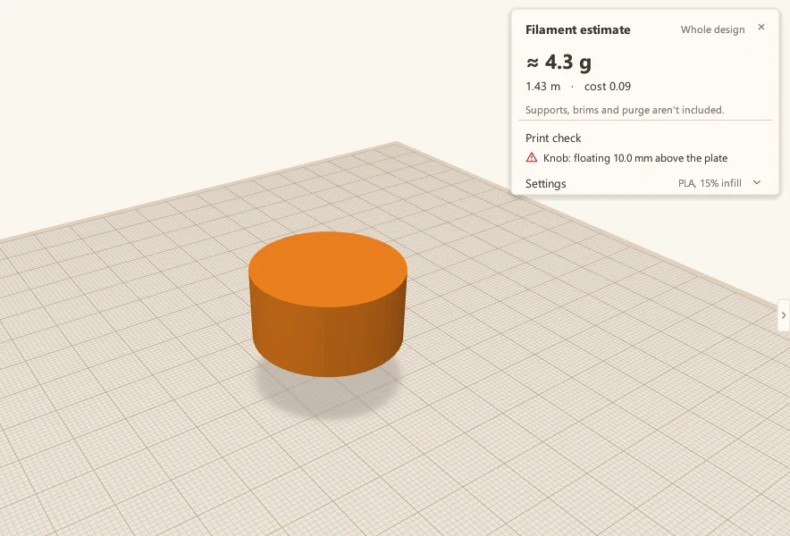
A part that's sunk into the plate is the opposite problem. Your slicer will either cut off what's below the plate or lift the part, and either way you don't get what you drew.
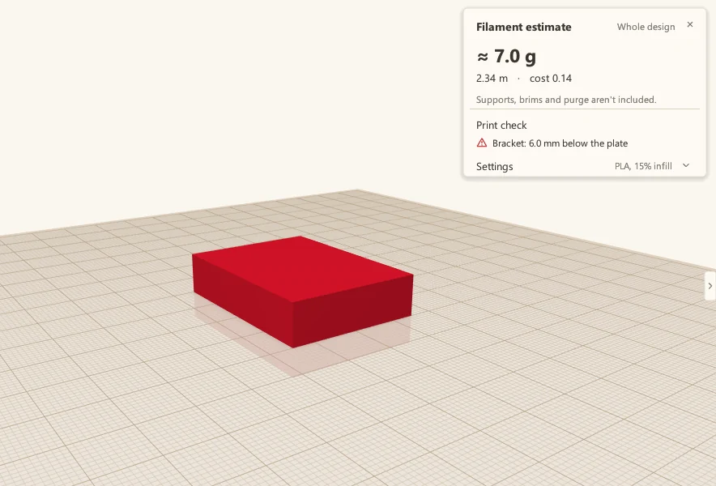
The fix for both is the same: select the part and press D to drop it onto the plate.
Does it fit on the plate?
The check knows the size of your printer's plate (set it in Settings) and warns about a part that hangs over the edge.
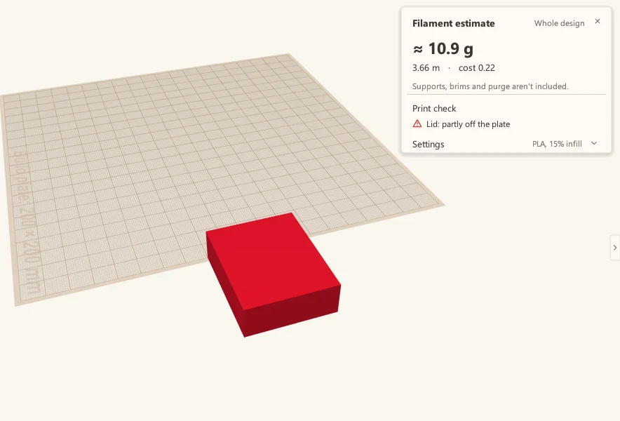
Move it back on. Your slicer may move it for you, but it may not. And if the part is simply bigger than the plate, you'll be told that too:
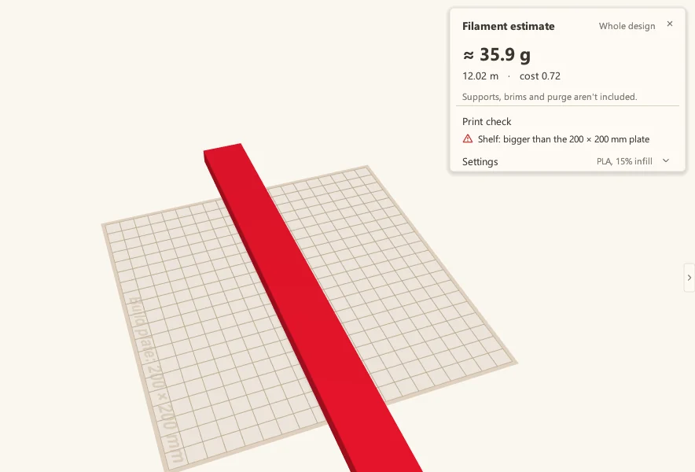
Scale it down, or split it into pieces that do fit and join them after printing.
Is the surface whole?
A 3D print needs a closed solid: a surface with no gaps, so the slicer can tell inside from outside. Shapes you make in ScottiCAD almost always are. Files you import, though, are another matter. STLs from other programs and websites often have faults, and slicers deal with them in different ways. Some repair them silently, some print them with a flaw, and some don't mention it at all.
ScottiCAD quietly fixes the small faults itself when it imports a file: tiny cracks are closed, and so are holes that lie flat. The check reports what's left, and when you click one of these warnings, the edges at fault are drawn in red on the part, so you can see where the trouble is.
A hole in the surface. Here a square is missing from the corner of a block, and the check gives its size:
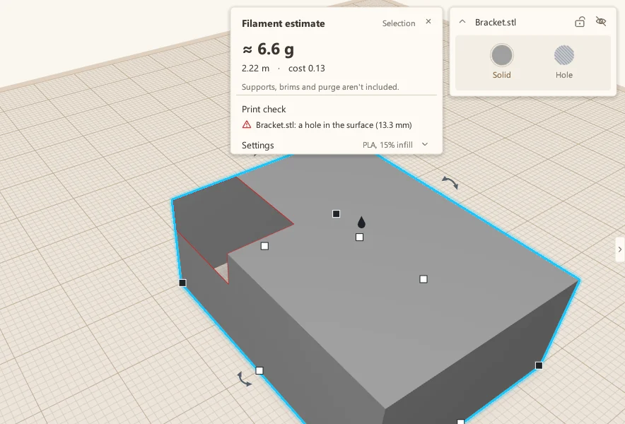
Faces that don't join up. This is the technical "non-manifold" fault: faces in the file twice, or a stray face hanging off an edge. This block looks perfect, but its top face is in the file twice, and the edges where that happens are marked:
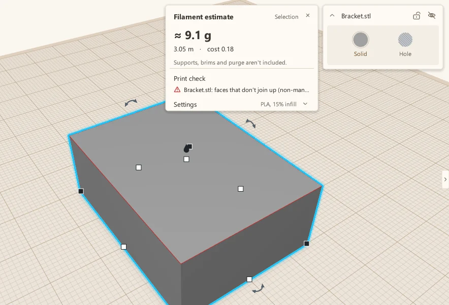
Inside out. Every face of a mesh points one way, out from the solid. Some programs get it backwards. ScottiCAD turns a whole file the right way out when it imports it, but if only part of a file is inside out, it can't tell which way you meant, so it warns you. An inside-out piece behaves like a hole: it can cut away what it should add.
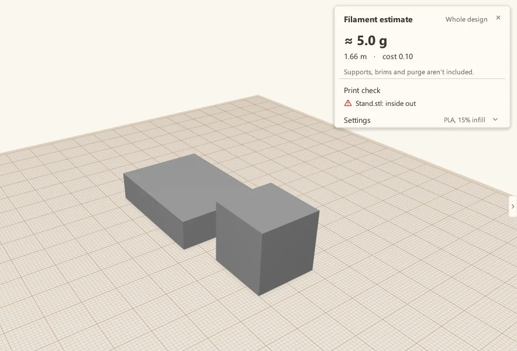
For all three, the best fix is at the source: export the file again from the program that made it, or download it again. Failing that, most slicers have a repair tool.
Hairline cracks. Not every gap matters. This block has a crack 0.05 mm wide running round it. Test blocks with cracks of different widths, tried in two popular slicers, showed that below about 0.075 mm a crack slices as if it weren't there. So the check mentions them with an ⓘ, and you can ignore them:
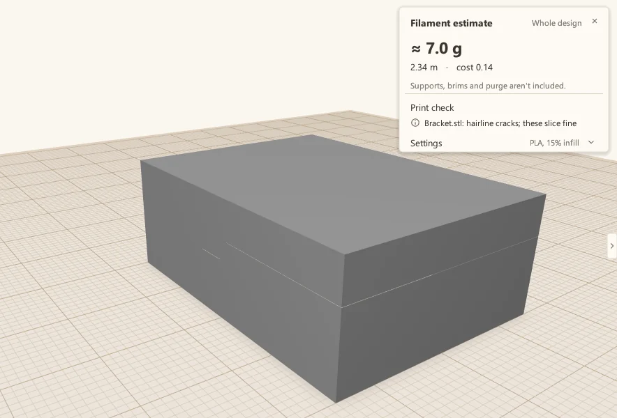
Is anything left hanging?
A group made of several pieces can have one resting on nothing. Here, the top of the table doesn't quite reach the post:
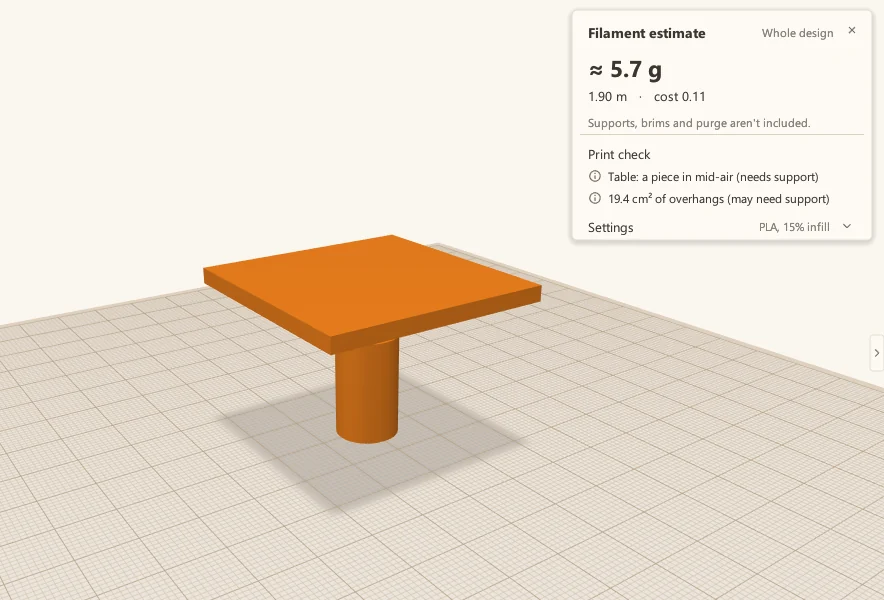
It's only an ⓘ, because sometimes you mean it: the slicer can print it on supports. But usually it's a mistake, and the fix is to lower the piece until it touches, or join it to the rest.
Overhangs
The last line of the check is the area of overhangs: faces facing downwards, leaning out more than 45° from upright, with nothing under them. These are where your slicer may add supports. Faces resting on the plate or on another piece don't count, and nor does a rounded bottom edge, which prints onto the first layers.
This is information, not a warning. Short bridges and gentle curves often print fine without support. But a large number is a hint that the part might print better another way up. This shelf bracket, standing up, has 10 cm² of overhang under its arms:
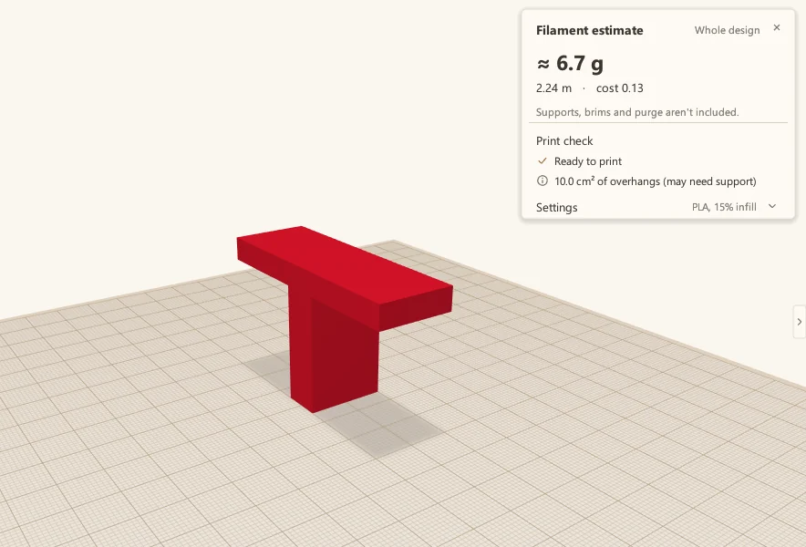
Laid on its side with Lay flat, it has none at all. It's stronger that way too, since every layer holds the whole T, so the joint between the arms and the upright isn't a weak point:
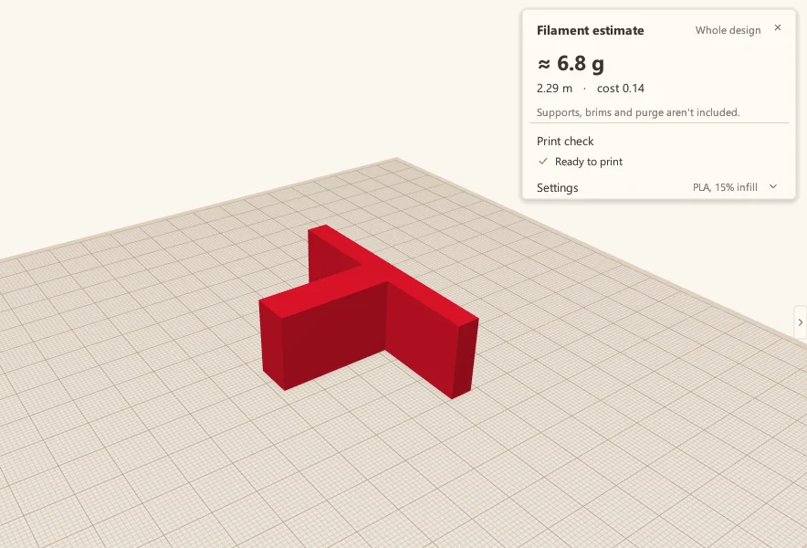
That's the way I use it: try a few faces with Lay flat and watch the number.
Before you export
My routine now is short:
- Group everything that should be one part.
- Select it and press D, so it sits on the plate.
- Open the filament panel and read the print check.
- Export.
It takes a few seconds, and it's a lot quicker than a failed print. There's more detail in the manual's Getting ready to print chapter, including the filament estimate and its settings.
More from Scotti's Corner
- Designing a Fallout-inspired Vault-Tec Raspberry Pi case 15 November 2026
- Using an AI agent to drive ScottiCAD 7 November 2026
- Getting 3D-printed parts to fit together 1 November 2026
- Screws in 3D prints: inserts and nut traps 31 October 2026
- Your first ScottiCAD script 30 October 2026